お遍路さんとスキーヤー、県境好きも訪れる寺 < 66番雲辺寺 / 香川県観音寺市・徳島県三好市池田町 >
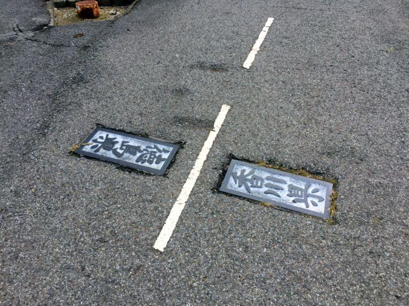
香川県と徳島県の県境は 阿讃山脈に分けられ、山の稜線を以って 南側が徳島県、北側が香川県になっています。
ある山の寺院への入口にある この場所は、香川・徳島の県境を歩いて跨ぐことができる、面白い場所になっています。
ロープウェイで向かう、お遍路さんのお寺
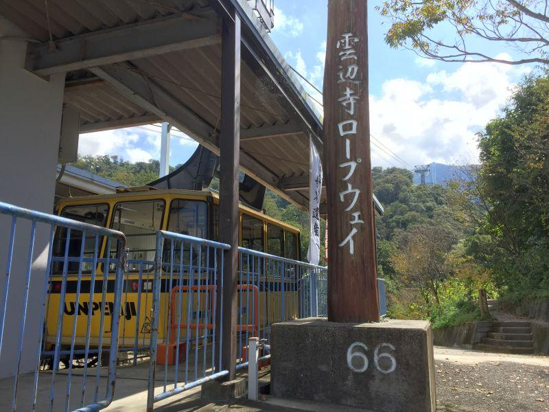
雲辺寺ロープウェイ(うんぺんじろーぷうぇい / 香川県観音寺市)
四国八十八ヶ所 第66番札所・雲辺寺(うんぺんじ)へのメインアクセスとなるのが、雲辺寺ロープウェイ。
お寺自体が四国八十八ヶ所で最高所となる 標高923mに位置するため、多くのお遍路さんが こちらのロープウェイを利用します。
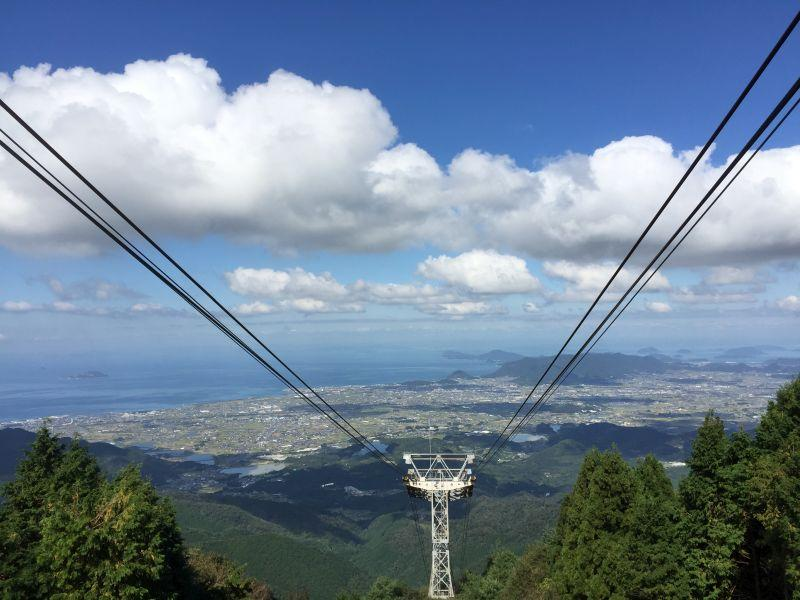
山麓駅... 260m
山頂駅... 917m
全長2,594m・高低差657mを、約7分かけて結ぶ。
眼下に広がる景色は秀逸で、
西は燧灘(ひうちなだ)と石鎚山系
北は三豊平野に瀬戸内海、瀬戸大橋、中国地方
エリア広範囲を眺望することができる。
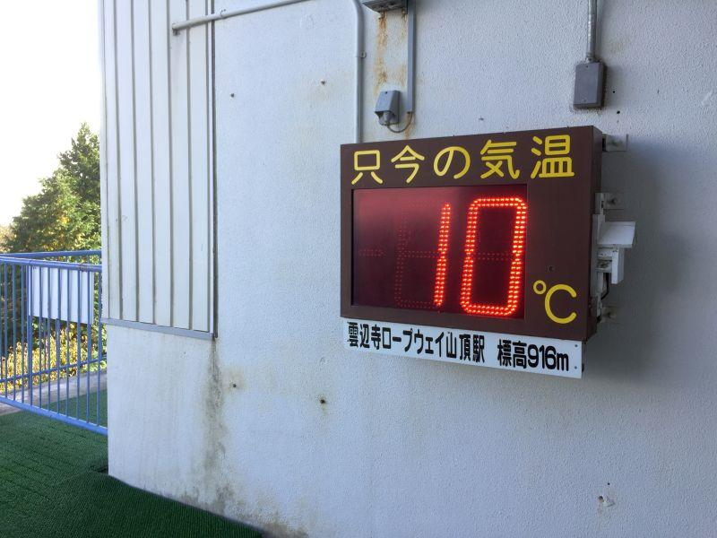
標高が高いため 麓より気温が低い。
冬は極寒、夏は冷涼。
山上には この気候を利用した人工スキー場があり、冬場は 四国八十八ヶ所を回るお遍路さんだけではなく スキー客がロープウェイに乗車する。
お寺への入口が県界
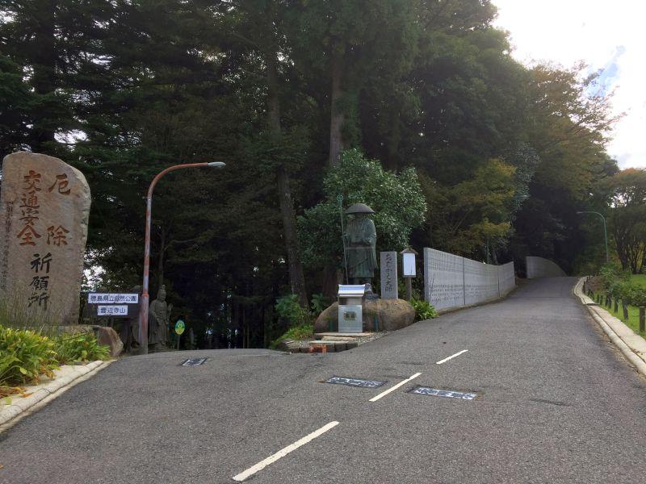
ロープウェイから下車すると道が二又に分かれていて、
左... 雲辺寺の入口
右... スノーパーク雲辺寺、毘沙門天展望館
その足元に、
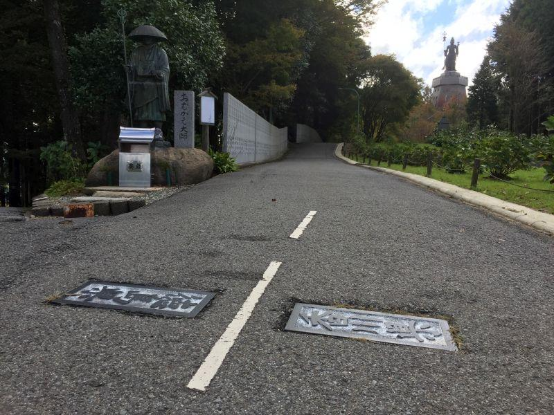
県境の線が記されています。
センターラインを中心に、
左足で徳島県 / 右足で香川県
なんて芸当も可能です。
四国八十八ヶ所最高所・第六十六番雲辺寺
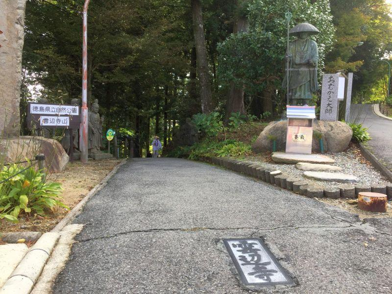
左側、66番札所雲辺寺へ向かう参道。
お遍路さんがロープウェイの発着時間、毎時00分・20分・40分に合わせて 頻繁に行き交います。
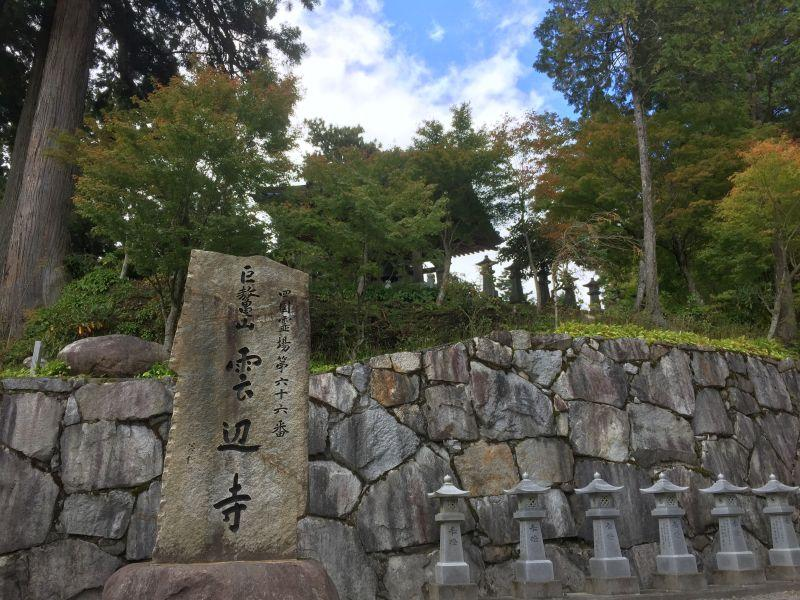
四国八十八ヶ所 第六十六番雲辺寺(しこくはちじゅうはちかしょ だいろくじゅうろくばん うんぺんじ / 徳島県三好市池田町)
雲辺寺の諸堂は 雲辺寺山稜線の南側に位置しているため、住所では徳島県になりますが、便宜上 讃岐(香川県)の札所に数えられます。
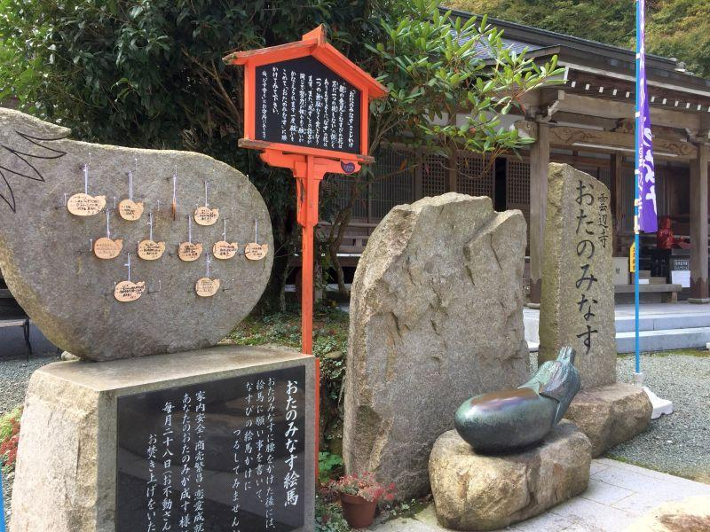
雲辺寺と言えば "なす"
茄子は花が咲けばその多くが実となる。
結実する確率が高いことを "成す" と掛けて、こちらのナスの腰掛の上に座り 願い事を念じると 「願いが成す」
すなわち、叶うとされています。
戦国武将ゆかりの展望所
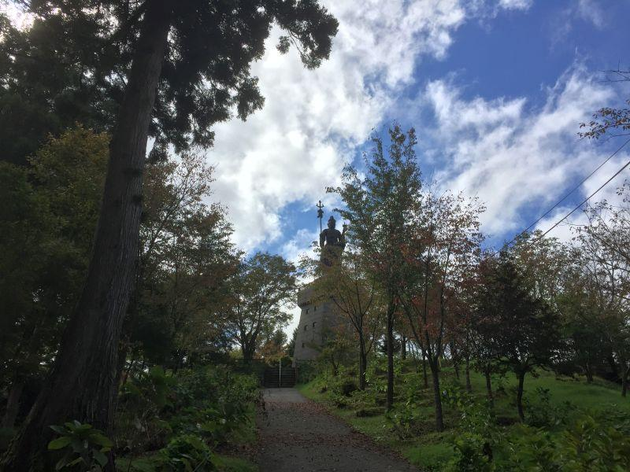
ロープウェイを下りて二又に分かれるもう一方の道を進むと、展望台があります。
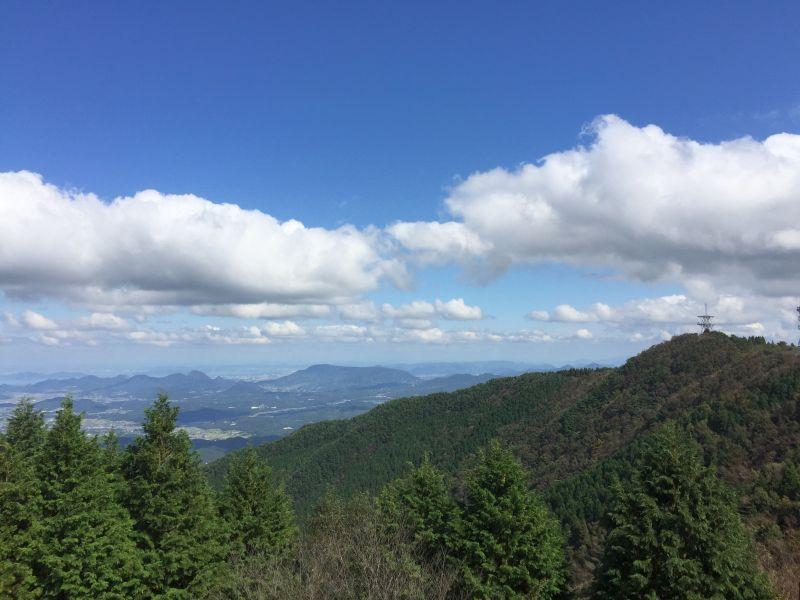
毘沙門天展望館がある場所こそ 雲辺寺山の頂上であり、周辺では最高所となる927m。
天気が良い日には 讃岐(香川)・阿波(徳島)はもちろん、伊予(愛媛)・土佐(高知)の四国中を見渡すことができる。
戦国時代、土佐の武将・長宗我部元親(ちょうそかべもとちか)は この山に登り、雲辺寺の僧に 四国統一の野望を語った。
「薬缶の蓋では水瓶の蓋はできません。あなたも四国全土を覆える器ではなく、土佐一国の器です」
「我が蓋は元親という名工が鋳た蓋である。たとえ小さくとも四国に蓋をしてみせる」
天正13年(1585)、元親は 一時四国全土を平定したが、その過程でかえって時の覇者たちと対立することとなり、同年に発生した豊臣秀吉の四国征伐に敗北。結局 元の土佐一国に減封になり没落の一途を辿る。
九州遠征に従属した際には 嫡男である信親(のぶちか)を失い、関ヶ原の合戦で西軍に付き その後土佐一国を没収。再起を図って兵を挙げた 大坂冬の陣・夏の陣が長宗我部家としての最後の戦となった。
雲辺寺山(66番雲辺寺)
< 自家用車 >
高松駅から 約1時間10分、65km
高松空港から 約1時間10分、65km
※ 雲辺寺ロープウェイ山麓駅まで
※ 主な地点からの最速・最短距離
関連記事
2017,10/23 手作りの田舎そばを食べに、そばやへ < そばや / 徳島県 >
2017,11/26 四国の鉄道が繋がった瞬間を見届けた立会人 < 土讃線三縄駅 / 徳島県 >